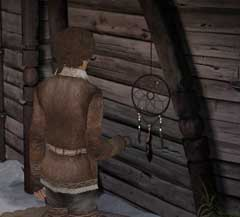

| 概要 | 地図 |
| 淡いヒント集 | ヒント集 | 的確なヒント集 |
| 攻略最短ルート |
| 場所選択に戻る |
ユコール族の村(後半)
|
ドリームキャッチャー
 ・このドリームキャッチャーに触れると、ハンスの夢の世界にいた人々の声が聞こえる。 ・この声にはどのような意味があるのか? ・また、この言葉が謎を解く鍵になるのか?
2本のレバー

・このレバーは何に使うものか? ・どうすれば正常に機能させることができるか? ・もし、あなたの思い通りにならないとしたら、レバーを疑わずに別のものを見た方がいいかもしれない。
機関車

・旅を続けるには、機関車を動かさなければならない。 ・どのように動かせばよいか? ・他人の協力を仰ぐには、何かやらなければならないことがあるはずだ。
オスカーの心臓部

・あなたは、”心を開く”という意味をもうすでに分かっているだろうか? ・あなたは、意味を知ろうと知るまいと”心を開”かなければならない。 ・オスカーの心とハンスの心は接点がある。ハンスの心について考えてみるとよい。
| 次へ >> |
|
| 場所選択に戻る |
| 概要 | 地図 |
| 淡いヒント集 | ヒント集 | 的確なヒント集 |
| 攻略最短ルート |
Syberia II
| 目次へ戻る | ページの上部へ |